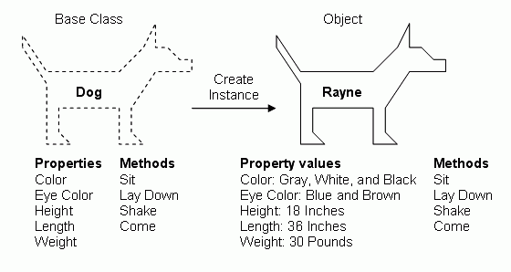

类与实例
之前的教程介绍的是我们如何面向过程编程，以下介绍面向对象。
对只想快速入门的读者来说，此部分可以暂时跳过。但对于想借此入门程序设计，或者要自己设计较为复杂的程序功能，亦或者是相对别人的程序、调用的包有较深的了解，此部分还是学习较好。
什么是面向对象
类与实例
类与实例的关系与区别，一图以蔽之：

（图片来自：Build Your Own ASP.NET Web Site Sample Chapter）
为何要面向对象
我们为何要将代码封装为函数？为了把相同或相似功能的代码块集合到一起，我们只需要写一次就能进行多次调用。
我们为何要将
类
书写一个最简单的类。
class Dog:
pass
生成实例。
dog = Dog()
输出对比。
print(Dog)
print(dog)
初始化与实例属性
我们可以在类中以定义init()方法来初始化我们的类，在初始化方法中，我们接受参数，并给我们的“狗”起名（为实例添加上实例属性）
class Dog:
def __init__(self, name):
self.name = name
dog = Dog('Alpha')
print(dog.name)
我们注意到在初始化init()方法中，第一个参数是self，这个self指实例本身，并且在所有实例方法中都要以第一个参数显式调用。
其实除了实例方法外还有类方法等不需要调用self，初学者可以暂时不掌握。
实例方法
除了初始化方法，我们也可以在类中定义一些函数来作为实例化以后的实例方法。以下，我们给我们的狗设置一些实例方法。
class Dog:
def __init__(self, name):
self.name = name
def set_properties(self, color, eye_color):
self.color = color
self.eye_color = eye_color
def get_properties(self):
print("{} dog has {} eyes.".format(self.color, self.eye_color))
def sit(self):
print(self.name + ', is sitting.')
dog = Dog('Alpha')
dog.set_properties('yellow', 'borwn')
dog.get_properties()
dog.sit()
类方法与类属性
此部分不常用
class Dog:
population = 0
def __init__(self, name):
self.name = name
Dog.population += 1
def set_properties(self, color, eye_color):
self.color = color
self.eye_color = eye_color
def get_properties(self):
print("{} dog has {} eyes.".format(self.color, self.eye_color))
def sit(self):
print(self.name + ', is sitting.')
@classmethod
def how_many(cls):
print("There are {} dogs.".format(cls.population))
alpha = Dog('Alpha')
beta = Dog('Beta')
gamma = Dog('Gamma')
Dog.how_many()
继承
继承是面向对象中一个重要概念，指的是一个类（子类）可以利用继承机制沿用其他类（父类）的属性以及方法。
我们首先定义一个动物类
class Animal:
def __init__(self, name):
self.name = name
def set_properties(self, color, eye_color):
self.color = color
self.eye_color = eye_color
def get_properties(self):
print("{} animal has {} eyes.".format(self.color, self.eye_color))
def sit(self):
print(self.name + ' is sitting.')
然后再定义两个类继承了该类
class Dog(Animal):
def __init__(self, name):
super().__init__(name)
def sit(self):
print(self.name + ' is a dog who is sitting.')
class Cat(Animal):
def __init__(self, name):
super().__init__(name)
def sit(self):
print(self.name + ' is a cat who is sitting.')
alpha = Dog('Alpha')
beta = Cat('Beta')
alpha.set_properties('yellow', 'borwn')
beta.set_properties('black', 'blue')
alpha.get_properties()
beta.get_properties()
alpha.sit()
beta.sit()
习题
遗传算法变形
- 此生物为一个类： properties: dna methods: propagate, mutate
- 定义一个列表存储这个类的所有实例
- 模拟繁殖过程
- 模拟淘汰过程